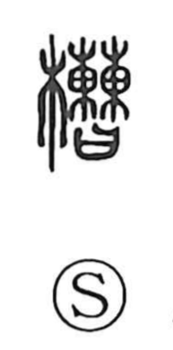

槽

Kun: fune | On: sou
trough ・ vat ・ tank ・ tub
Explanation
A phono-semantic character: the wood element 木 signals a wooden vessel, while 曹 (on reading sou) provides the sound. Shirakawa reads the ancient 曹 as a ritual-legal scene in which two parties—the accuser and the accused—each place a pledge of gold into a bag-like container before the deities to inaugurate the trial, an image that evokes things set in facing ranks. From this, 槽 came to denote wooden tubs or buckets arranged in two rows. The Yù Piān (Gyoku Hen) glosses it as a “horse bucket,” i.e., a feed trough, and by extension it names containers for water or hot water, as seen in words like 水槽 (water tank) and 浴槽 (bathtub).